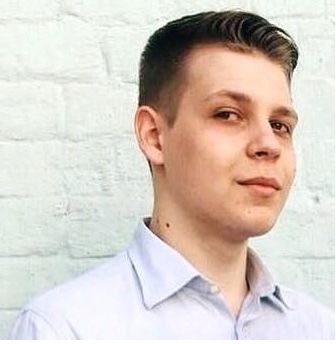

Виктор Лозинский

Birth Date: 02.06.1999
City: Kyiv
Tel: +3800000000000
E-Mail: 0000@gmail.com
Goal:Looking for a job Front-end developer.
Education:
Kyiv International University
|August 2020- now days|
Faculty "Pharmacy, Industrial Pharmacy" (Extramural)
First Kyiv Medical College
|August 2014-July 2018|
Speciality "Paramedic" (Daytime education)
Additional Education:
February 2022- now days | Courses of Front-end development, "Beetrot
academy", Kyiv
February 2017- June 2017 | Courses of massotherapy, "First Kyiv
Medical College", Kyiv
Work Expirience:
Support manager (L2)
August 2021- now days | Medical information system "Helsi.me".
Key Responsabilitties:
-
Managing the customer support department's day-to-day functions.
- Responding to escalated customer support issues.
-
Formulating and revising customer support policies and promote
their implementation.
Medical Representative
September 2020-July 2021 | Pharmaceutical Company "Novator Pharma",
Kyiv.
Key Responsabilitties:
-
Selling the company's medications to doctors, pharmacists, and
other relevant healthcare professionals.
- Following up on leads generated by the company.
-
Researching competitor’s medications and their respective market
performances.
-
Building and maintaining good business relationships with
customers to encourage repeat purchases.
-
Building and maintaining good business relationships with
customers to encourage repeat purchases.
Pharmacist
August 2019-August 2020 | Pharmacy "Vitamin", Kyiv.
Key Responsabilitties:
-
Compounding and dispensing medications, as prescribed by
physicians.
-
Monitoring customers’ drug therapies, advising interventions,
and informing customers of any potential side effects.
-
Instructing customers on how and when to take prescribed
medications.
-
Completing operational requirements of the pharmacy, including
verifying order entries, maintaining records of controlled
substances, charges, and removing expired and/or damaged drugs
from the pharmacy’s inventory.
- Performing other administrative tasks when needed.
Paramedic
August 2018-August 2019 | Center of emergency medical assistance and
disaster medicine city of Kyiv
Key Responsabilitties:
-
Operate ambulance equipment and respond to radio transmissions.
- Monitor patient’s condition en route to the hospital.
-
Use tech equipment and tools to stabilize patients or provide
immediate treatment
-
Adhere to established medical protocols and procedures as well
as legal guidelines and health and safety standards
Hard skills
- HTML| Begginer level
- CSS| Begginer level
- Figma| Begginer level
Soft skills
- Presentation skills
- Empathy
- Friendliness
- Cooperation
- Self-management
- Initiative
Additional Information:
Marital status: Single.
Driver's license: yes.
Possibility of business trips: yes.
Hobbies: I play sports mafia, vidiogames, read books.